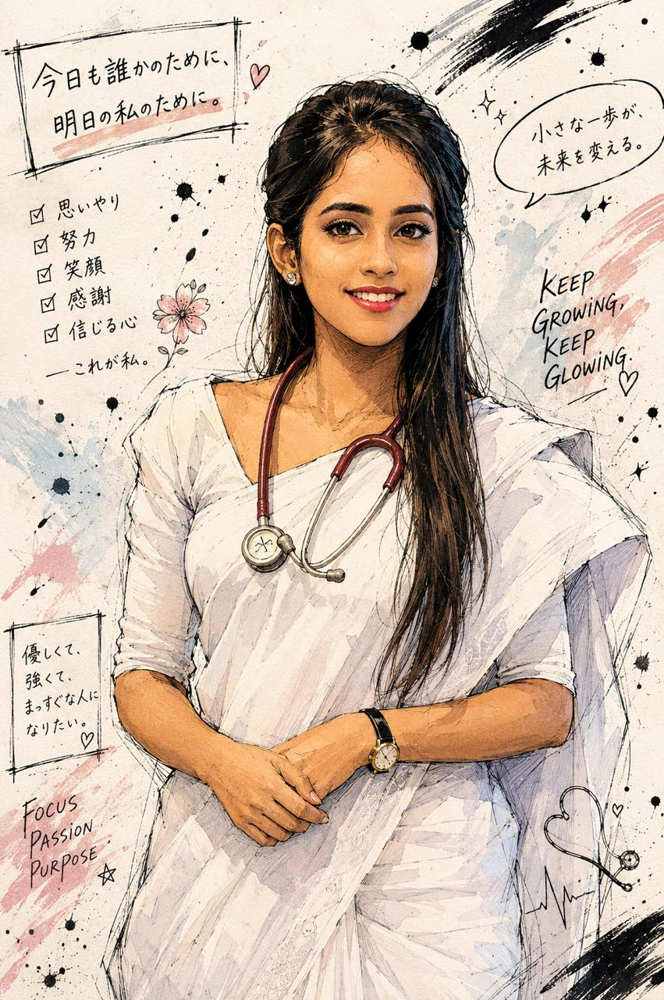

Years of studying
One page, one lecture, one day at a time.
For your big day
Before your final hurdle tomorrow,
I need you to know something.
a little note from someone who's proud of you
A look back
Every step brought you here.
One page, one lecture, one day at a time.
And all the cups of coffee that came with them.
So much to learn, and you kept showing up.
Even the hard days became part of your strength.
Learning by being there, caring as you go.
Each one bringing you closer to the doctor you are.
That is something extraordinary.
A few favorite moments
All the work, all the growth, all the moments that brought you here.

Big memories, very big achievement.
A reminder for tomorrow
Judy, you've already done something incredibly hard.
You studied when you were tired.
You kept going through the difficult days.
You made it all the way here.
Take each part as it comes. One question, one moment, one breath at a time.
I believe in you. And I'm so proud of you.
Take a breath.
Listen carefully.
Trust the work you've put in.
You've got this, Champ.
For tomorrow
It’s a lot, but you don't have to carry it all at once.
Take a moment to settle in, listen closely, and work through it step by step. You know how to think things through.
You've got time to find your rhythm.Focus on what's in front of you. Start with what you know and let your preparation guide you.
One clear thought at a time.A fresh case, a fresh start. Take a breath and give it your attention.
You don't need to rush to be good.Read each question carefully, trust what you've learned, and keep moving.
If one question feels hard, the next is still waiting.A fresh start. Take a breath, find your pace, and do the best you can with each question.
You've prepared for this moment.Pause, gather your thoughts, then answer as clearly as you can.
You are allowed to take a breath.Listen to the question and take it in small pieces. Your knowledge is there.
Steady and thoughtful is more than enough.Last one. Let yourself feel proud that you made it this far, then give it your best.
I'm cheering for you through every minute.Want a few quick Pediatrics questions?
Quick recall round
Pick an answer to reveal it and a quick explanation.
For exam practice; follow your course and local protocols.
One last thing
Judy, whatever happens, I'm proud of you.
You've worked so hard to get here.
Take it one part at a time. You can do this.
This is your moment
Go get that degree, Dr.Shavindi.
I'll be cheering for you.